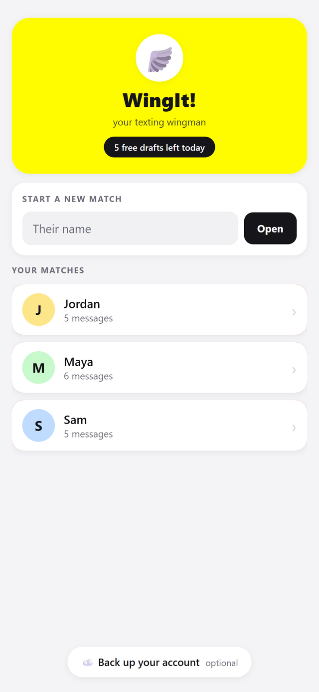
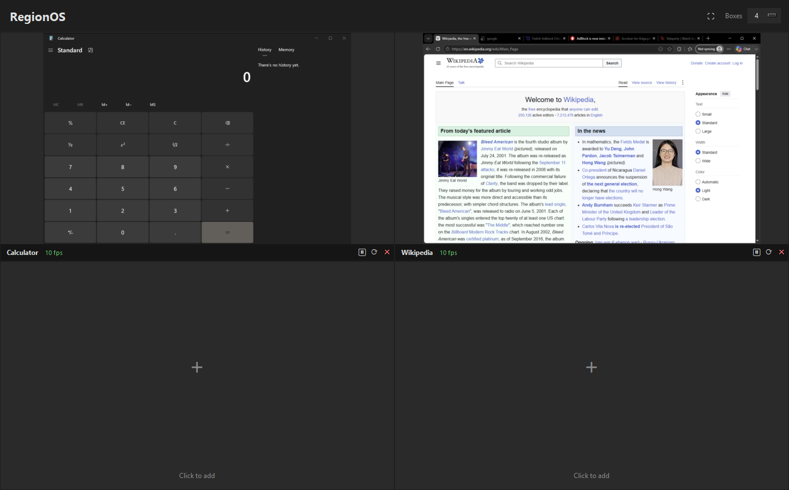
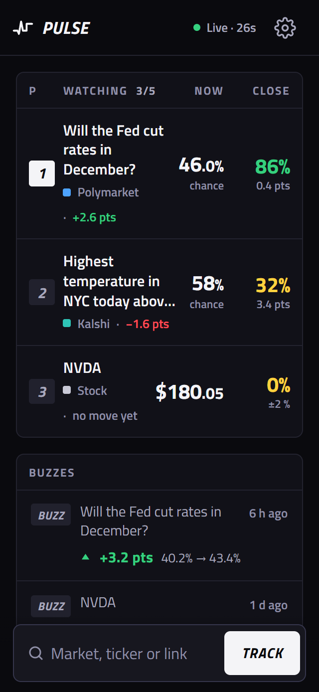
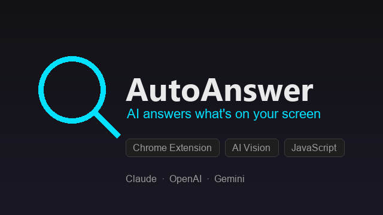

Emery
Reszka
Everything I build watches a live source and reports what changed.
An assistant that reads a conversation and drafts the next message. A desktop tool that keeps previewing a window after the window is gone. A dashboard that flags a market moving in a way the others don't confirm. Most of what I know came from getting those to run on machines that weren't mine.
- Degree
- B.S. Computer Science, Florida Gulf Coast University
- Graduating
- May 2027
- Based
- Osprey, Florida, and will relocate in state
- Work authorization
- U.S. citizen, no sponsorship needed
- Looking for
- Software engineering internships and 2027 graduate roles
What I've built
-

WingIt!
An AI texting assistant that runs on the web, iOS and Android from one codebase.
It reads a conversation screenshot, works out who said what, and drafts a reply matched to the other person's tone. A coach answers questions about a specific conversation, and a feature called The Read tells you how both sides are coming across.
What was hard. A language model returns something fluent and wrong with exactly the confidence it returns something good. Most of the work was narrowing prompts until replies came back in a shape the interface could rely on, then deciding what a person sees when they don't. Screenshots are thrown away after processing, which also means there is no saved corpus to re-test a prompt change against.
- React Native
- Expo
- TypeScript
- Python
- Claude API
- Prompt engineering
- Fly.io
- REST APIs
-

RegionOS
A Windows tool that keeps previewing any region of your screen, released as v0.1.0 in July 2026.
Draw a box anywhere and it keeps updating in real time, whether that box holds a screen area, an application window, or a website, and it keeps going while the source is covered, minimized, or pushed off-screen. Fullscreen mode drops everything but the grid of live previews.
What was hard. There is no picture to copy off a window that is not being drawn, so nearly everything structural in the codebase exists to solve that one clause. I kept it fully offline on deterministic computer vision instead of a model, which caps what it can ever recognize and buys something I wanted more: when it gets a region wrong, it gets it wrong the same way every run, and I can go find out why.
- Python
- Win32 API
- Computer vision
- PyInstaller
- Windows desktop
-

Pulse
A dashboard that watches several unrelated markets at once, live since January 2026.
It pulls equities, Polymarket prediction markets and sports betting lines onto one screen, then flags whatever is moving in a way the other sources don't confirm.
What was hard. Almost none of it is the chart. It is sources that disagree with each other, fields that vanish without warning, rate limits, and the question that keeps coming back: is this spike a real signal, or a bad row I failed to catch upstream.
- Python
- Multi-source aggregation
- REST APIs
- JSON
- Vercel
-

SnipAI
A Chrome extension that re-reads a region of a tab whenever its pixels change.
Select any region of a browser tab and it re-queries a vision model the moment that region changes, with Claude, GPT and Gemini switchable at runtime behind one provider-agnostic interface.
What was hard. Manifest V3 replaced the long-lived background page with a service worker the browser tears down whenever it likes. Watching a region, noticing the change, and calling the model all had to survive being restarted mid-task.
- JavaScript
- Chrome extension
- Manifest V3
- Vision models
- REST APIs
-
Campus event management system
A Django application built by a team on sprint cycles, where I owned registration and waitlists.
Accounts and roles, event registration, waitlists and attendance tracking, built for one organization rather than the public, with frontend and backend handled by separate groups.
What was hard. A waitlist looks like a feature and is really an ordering problem. Store each person's position as a number and every read is cheap, but one cancellation in the middle means rewriting every row underneath it. Role-based access pushed on the same rows from the other side, because an organizer and a student look at one registration and are entitled to different parts of it.
- Django
- Python
- SQL
- Authentication
- Role-based access
- Agile sprints
There is also a turn-based JRPG in GameMaker Studio 2 and a roguelike written in pure Python with Tcod, both about procedural generation more than anything else. They live on the desktop version of this site, along with everything else I've made.
What I work in
- Languages
- Python, Java, C, TypeScript, JavaScript, SQL, R, HTML
- Frameworks and tools
- Django, React Native with Expo, PyTorch, SDL2, PyInstaller, Git, Linux under WSL, Win32 API, REST APIs, JSON
- Ideas I use daily
- Object-oriented programming, data structures and algorithms, computer vision, integrating LLM APIs, prompt engineering, working in Agile sprints, and the debugging that holds all of it together
Where I've been
-
Florida Gulf Coast University, Fort Myers
B.S. Computer Science, expected May 2027
-
University of Wisconsin–Milwaukee, School of Engineering
Computer Science coursework, September 2022 to 2026, before transferring to FGCU
-
NCAA Division I swimmer, UW–Milwaukee Athletics
September 2022 to now
- Twenty to forty hours a week of training and competition against a full course load
- Four years of showing up on the mornings it stopped being interesting, which is most of the reason I finish things instead of leaving them in a branch
-
Aquatics staff, IMG Academy, Bradenton
June to August 2026
- Supervised swimmers and kept the pool areas safe for student athletes and campers
- Enforced facility rules face to face and stayed ready for water emergencies